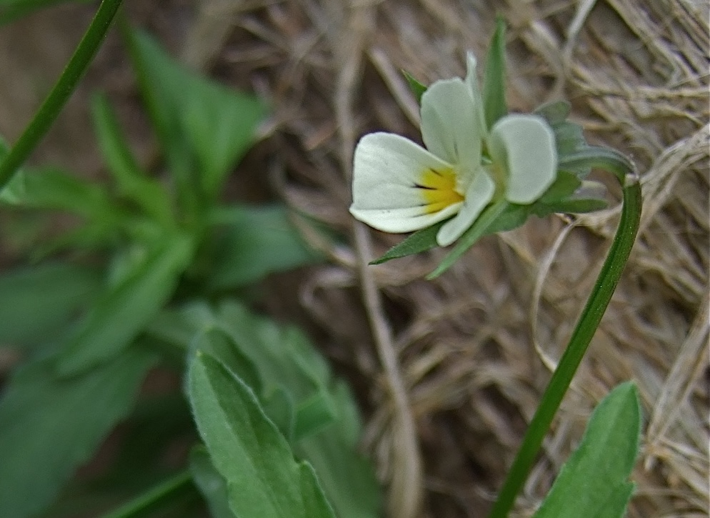

Das wilde Mini-Stiefmütterchen — Acker-Bewohner und Vorfahre der Garten-Sorten.


Stiefmütter und Stiefkinder
Der Name „Stiefmütterchen“ stammt aus einer alten Volkstradition: Die Blüte wird interpretiert als „böse Stiefmutter“ (das große obere Blütenblatt), die zwei Stieftöchter (mittlere) und die zwei eigenen Töchter (unten). Der Witz: Die „Stiefmutter“ sitzt zentral, die anderen müssen sich arrangieren. Eine etwas zynische Märchen-Botanik aus dem 18./19. Jahrhundert.
Vorfahr der Garten-Sorten
Aus dem Acker-Stiefmütterchen und seinen Verwandten (V. tricolor — Wildes Stiefmütterchen) wurden alle heutigen Garten-Stiefmütterchen gezüchtet. Die wilde Form ist viel kleiner und blasser — Blüten oft nur 1 cm im Durchmesser, mit cremegelben und blassvioletten Tönen. Die spektakulären, großen Garten-Stiefmütterchen sind das Ergebnis von 200 Jahren Auslese und Kreuzung.
Wissenswertes & Merksätze
Erkennen leicht gemacht
Niedrige (10–30 cm) Pflanze mit aufrechtem Stängel. Blätter wechselständig, lanzettlich-spatelförmig, am Rand grob gezähnt. Blüten klein (1–2 cm), 5 Blütenblätter (typisch Viola), Farbgebung gelb-creme mit blassvioletten Akzenten.
Acker-Pflanze mit Schutzstatus
Acker-Stiefmütterchen sind durch intensive Landwirtschaft selten geworden. In Bio-Äckern und auf Brachflächen findet man sie noch — wertvolle Pionierin für viele Bestäuber und Schmetterlings-Raupen.